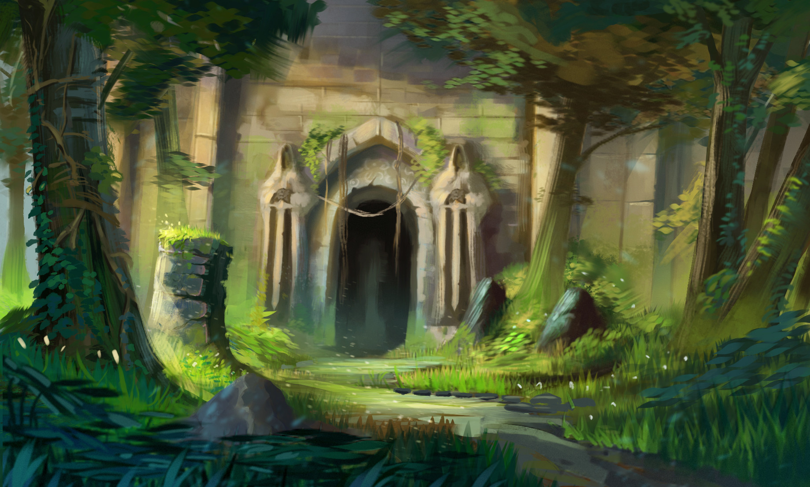

Dungeons, ou masmorras, são ambientes comuns em histórias de fantasia e jogos de RPG. Geralmente são locais subterrâneos cheios de perigos, armadilhas e criaturas hostis. Servem como desafios para aventureiros em busca de tesouros ou segredos antigos. Cada dungeon tem seu próprio estilo, podendo ser ruínas, cavernas naturais ou fortalezas abandonadas. Elas costumam ter corredores estreitos, salas ocultas e enigmas a serem resolvidos. Muitas vezes, um poderoso inimigo espera no final como um chefe. Dungeons estimulam a exploração, a estratégia e o trabalho em equipe. Em jogos, elas ajudam a testar as habilidades dos personagens. São também símbolos de mistério e aventura. Seu clima sombrio e imprevisível atrai jogadores e leitores há décadas.
Dragões são criaturas lendárias presentes em mitologias de diversas culturas ao redor do mundo. Na Europa, costumam ser retratados como monstros alados que cospem fogo e guardam tesouros. Já nas culturas orientais, como a chinesa, são símbolos de sabedoria, poder e boa sorte. Essas criaturas normalmente possuem corpos longos, escamosos e podem ter chifres, garras afiadas e olhos brilhantes. Muitas histórias os descrevem como seres inteligentes, capazes de falar e usar magia. Em contos medievais, dragões eram inimigos temidos por cavaleiros. No entanto, obras modernas os retratam também como aliados ou guardiões. Eles representam tanto o caos quanto a ordem, dependendo da tradição. Na fantasia contemporânea, aparecem em livros, filmes e jogos. Seu fascínio continua a inspirar a imaginação humana.